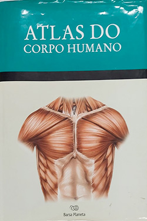

Atlas do Corpo Humano
Sobre o livro:
O Atlas do Corpo Humano apresenta o corpo humano de maneira inédita, com detalhes minuciosos. A obra é composta por: 01 Livro: 384 páginas organizadas com a seguinte estrutura: O Corpo Humano em seu Conjunto Estrutura interna do Corpo Humano Pele Músculos Esqueletos Articulações Sistema Circulatório Sistema Digestório Sistema Respiratório Sistema Urinário Sistema Genital Sangue Sistema Imunológico Glândulas Endócrinas Sistema Nervoso Órgãos dos Sentidos índice Onomástico 01 CD-ROM: traz um detalhado percurso pelo interior do corpo humano, com diferentes sistemas, órgão e partes que o integram. Apresenta 4 seções: O Corpo Humano: em seu conjunto e Estrutura interna; O Corpo Interativo; Jogos: o construtor e Jogo da mente; Buscador: Localizar em ordem alfabética todos os componentes do Corpo Humano.
Imagens:
Onde Encontrar?
Estante 01, Prateleira 07, Seção Anatomia Humana
Código do Livro
2611
Outras informações:
- Número de páginas: 384;
- Autor:Vigué-Martin(1920 - 1984);
- Editora: Barsa Planeta.